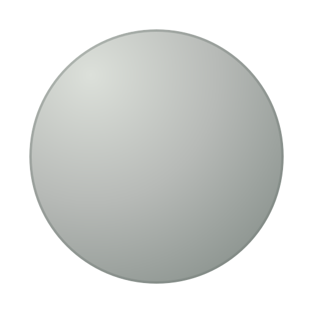

Samma runda grundform och samma skin-tema i två stilar. Kropparna nedan är reproducerbara byggprover, inte kompletta skins och inte inkopplade i spelet. Svängarna visar hur kroppsdelarna möts utan att bollmönstret roteras.
512 × 512 · transparent WebP · matt ljus, mjuk kant

32 × 32 · transparent WebP · fast pixelrutnät, ingen utjämning